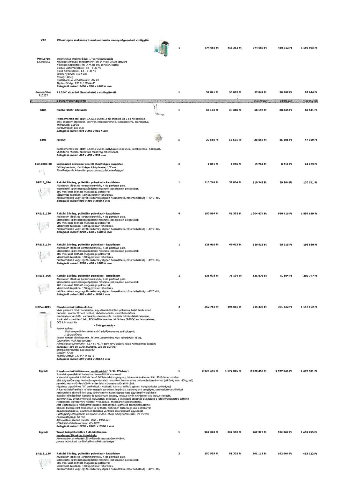

| Tétel | Menny. | Egys. | Anyag e.ár (net HUF) | Díj e.ár (net HUF) | Anyag összesen (net HUF) | Díj összesen (net HUF) | Anyag+Díj összesen (net HUF) |
|---|---|---|---|---|---|---|---|
| VAD Kétoszlopos szakaszos üzemű automata mennyiségvezérelt vízlágyító | 1 | NaN | 774 653 | 418 312 | 774 653 | 418 312 | 1 192 965 |
| Europafilter 810235 RS 5/4" vízszűrő (lemosható) a vízlágyító elé | 1 | NaN | 57 041 | 30 802 | 57 041 | 30 802 | 87 844 |
| S406 Platós raktári kézikocsi | 1 | NaN | 56 195 | 30 345 | 56 195 | 30 345 | 86 541 |
| S106 Falikút | 1 | NaN | 30 558 | 16 501 | 30 558 | 16 501 | 47 059 |
| 162-0007-00 Légbeszívó szeleppel szerelt tömlővéges csaptelep | 2 | NaN | 7 881 | 4 256 | 15 762 | 8 511 | 24 273 |
| BRE18_094 Raktári állvány, polietilén polcokkal - kezdőelem | 1 | NaN | 110 748 | 59 804 | 110 748 | 59 804 | 170 551 |
| BRE18_126 Raktári állvány, polietilén polcokkal - kezdőelem | 8 | NaN | 150 559 | 81 302 | 1 204 474 | 650 416 | 1 854 889 |
| BRE18_124 Raktári állvány, polietilén polcokkal - kezdőelem | 1 | NaN | 128 916 | 69 615 | 128 916 | 69 615 | 198 530 |
| BRE18_096 Raktári állvány, polietilén polcokkal - kezdőelem | 1 | NaN | 131 673 | 71 104 | 131 673 | 71 104 | 202 777 |
| MRPvc 4011 Nagykonyhai hűtőszekrény | 2 | NaN | 362 715 | 195 866 | 725 430 | 391 732 | 1 117 162 |
| Egyedi Nagykonyhai hűtőkamra, padló nélkül (4.54. Zöldség) | 1 | NaN | 2 920 455 | 1 577 046 | 2 920 455 | 1 577 046 | 4 497 501 |
| Egyedi Távoli telepítés felára 1 db hűtőkamra maximum 20 méter távolságig | 1 | NaN | 967 373 | 522 382 | 967 373 | 522 382 | 1 489 755 |
| BRE18_126 Raktári állvány, polietilén polcokkal - kezdőelem | 2 | NaN | 150 559 | 81 302 | 301 118 | 162 604 | 463 722 |
